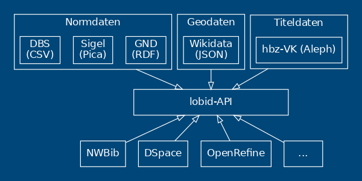

Integration der gemeinsamen Normdatei in DSpace auf Basis von lobid
Teil I
Adrian Pohl
Offene Infrastruktur,
Hochschulbibliothekszentrum NRW (hbz)

Bibliothekar*innentag, 2021-06-17
http://slides.lobid.org/2021-06-17-bibtag21/


Hochschulbibliothekszentrum des Landes Nordrhein-Westfalen, seit 1973
Dienstleistungs- und Entwicklungseinrichtung für digitale Services in Hochschulbibliotheken
Einige Arbeitsbereiche: Verbundkatalog, Suchportal DigiBib, Fernleihe, Konsortiale Erwerbung
hbz-Gruppe Offene Infrastruktur
Offenheit der genutzten Standards, der Daten, Software und Schnittstellen
Derzeit fünf Personen: 3 Entwickler*innen und zwei Bibliothekare
Arbeitsschwerpunkte: lobid, Metafacture, OERSI, SkoHub
lobid steht für Linking Open Bibliographic Data
Unter lobid.org publiziert das hbz seit 2011 Linked Open Data (LOD), inzwischen in 3 Diensten
Web-basierte Rechercheoberflächen und offene Schnittstellen
Viele verschiedene Nutzer*innen aus dem gesamten deutschsprachigen Raum (siehe z.B. diese Liste)
lobid-Dienste
lobid-resources: Daten des hbz-Verbundkatalogs
lobid-organisations: Daten des deutschsprachigen Sigelverzeichnisses und DBS-Stammdaten
lobid-gnd: Gemeinsame Normdatei
Datenquellen
lobid-gnd

GND als LOD von der DNB
Die DNB publiziert die GND unter anderem als Linked Open Data (LOD) unter https://data.dnb.de/opendata/
Zusätzliche Anreicherungen, z.B. Links, in EntityFacts
Diese Daten bilden die Grundlage für lobid-gnd
Die Oberfläche

Auto Suggest

Ergebnisliste

Einzeltreffer

Beziehungsgraph

JSON-LD-Link

JSON(-LD)


Web-API

Abfragemöglichkeiten
JSON-LD-Daten in Elasticsearch-Index
Elasticsearch bzw. Lucene Suchsyntax
Und nun zu Pascal, der die Nutzung der lobid-gnd-API an einem konkreten Beispiel zeigt.
Weiterführende Informationen
- lobid-Blog, Präsentationsfolien, lobid auf Twitter und Mastodon
- Pohl, Adrian / Steeg, Fabian / Christoph, Pascal (2018): lobid – Dateninfrastruktur für Bibliotheken. In: Informationspraxis 4(1). https://doi.org/10.11588/ip.2018.1.52445
- Steeg, Fabian / Pohl, Adrian / Christoph, Pascal (2019): lobid-gnd – Eine Schnittstelle zur Gemeinsamen Normdatei für Mensch und Maschine. In: Informationspraxis 5(1). https://doi.org/10.11588/ip.2019.1.52673